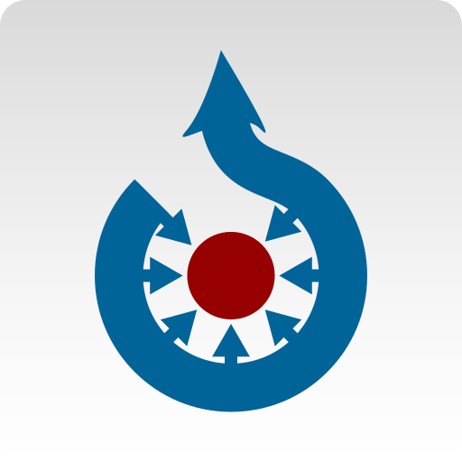
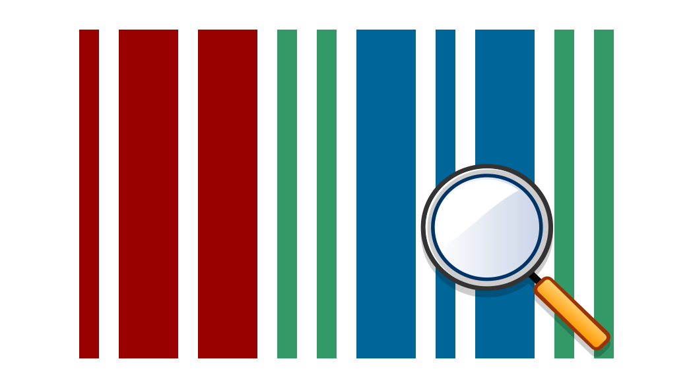
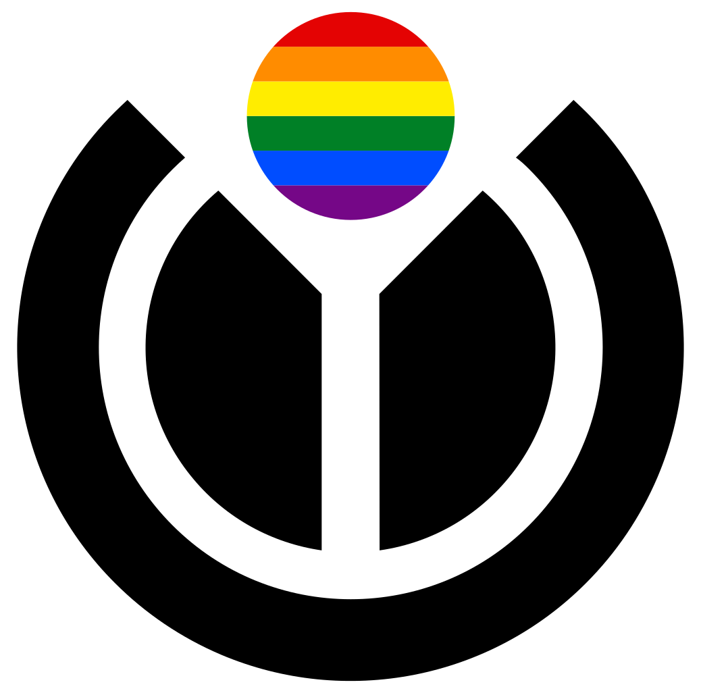

Commons
Freely usable photos and more
Wikivoyage
Free travel guide
Wiktionary
Free dictionary
Wikibooks
Free textbooks
Wikinews
Free news source

Wikidata
Free knowledge base
Wikiversity
Free course materials

Wikiquote
Free quote compendium
Mediawiki
Free and open wiki application

Wikisource
free library
Wikispecies
Free species directory
Meta-Wiki
Community coordination &
documentation

Wikipadia is hosted by the Wikipedia
Foundation, a non-profit organisation that also
host a range of other projects.
Download Wikipedia for Android or iOS
Save your favourite articles to read offline, sync
your reading lists across devices and
customize your reading experience with the
official Wikipedia app.